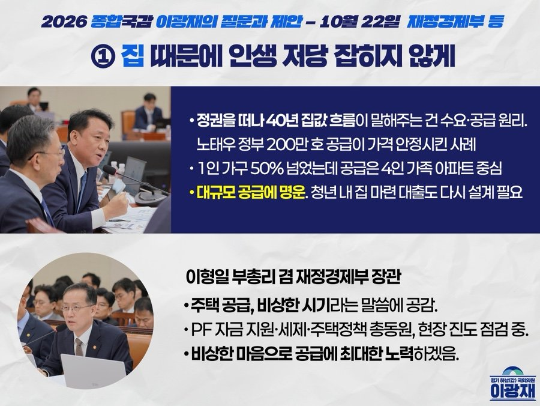
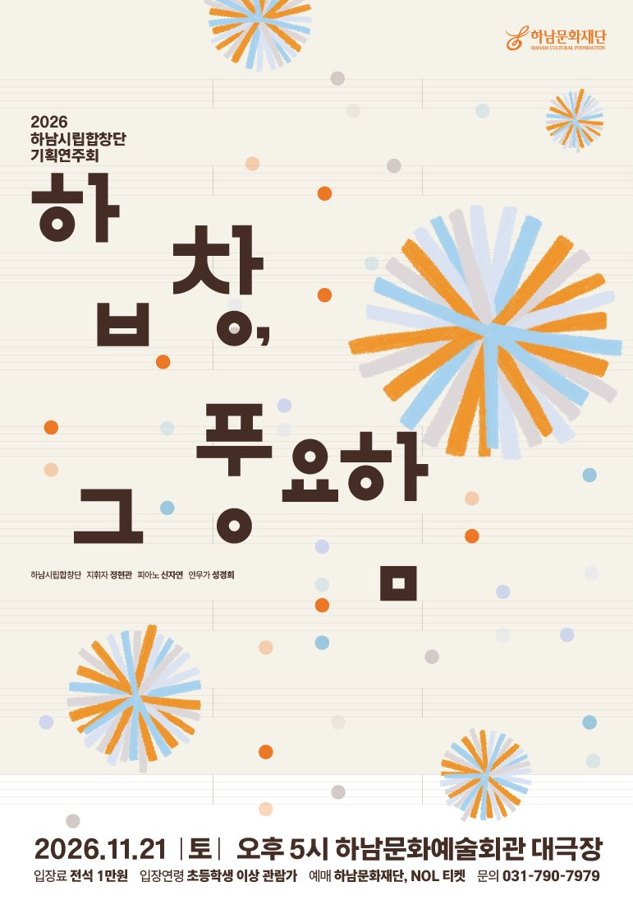
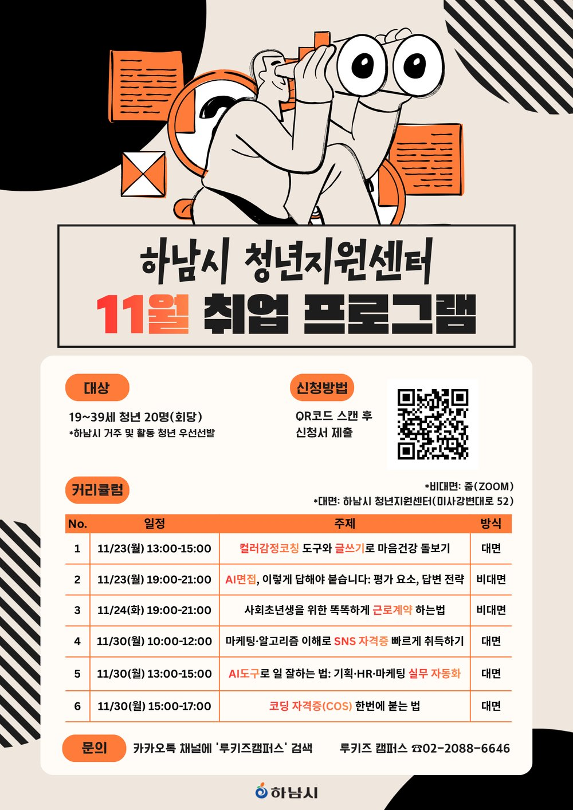

65호 | 2026년 10월 26일 발행
📌 이번 호 주요 목차
 우리동네 국회의원 이광재
우리동네 국회의원 이광재
📝 현장일지
이광재의원, 종합국감서 "돈 쓰는 국가에서 투자하고, 돈 버는 국가로"
• 10월 22일 재정경제부 종합국정감사 질문과 제안 5가지를 카드뉴스로 정리
• 1인 가구 50% 시대 맞춘 대규모 주택 공급·청년 내 집 마련 대출 재설계 촉구
• 20년 넘게 그대로인 근로소득세 과표·배우자 상속공제 등 세제 현실화 요구
• 국부펀드·국민연금 등 흩어진 국가 자금 묶어 '넥스트 네이버' 키울 투자 제안
• 3,800조 국가자산 한눈에 볼 시스템 주문, 이형일 부총리 "100% 공감"
• 1인 가구 50% 시대 맞춘 대규모 주택 공급·청년 내 집 마련 대출 재설계 촉구
• 20년 넘게 그대로인 근로소득세 과표·배우자 상속공제 등 세제 현실화 요구
• 국부펀드·국민연금 등 흩어진 국가 자금 묶어 '넥스트 네이버' 키울 투자 제안
• 3,800조 국가자산 한눈에 볼 시스템 주문, 이형일 부총리 "100% 공감"

📌 출처: 이광재 공식 네이버 블로그
📝 현장일지
이광재의원, 국정감사 마무리 "확인한 과제, 예산서의 숫자로 남기겠습니다"
• 기획예산처·한국은행 종합감사를 끝으로 2026년 국정감사 마무리
• 20년 전 그대로인 학교 책걸상 교체, 초등 정보 전담교원·AI 튜터 배치 촉구
• 창우초·신평중 창문 교체 특별교부금 8억 3,600만 원 확보, 하남교육지원청 내년 9월 개청
• 경계 넘는 버스 노선 직접 인가 위해 대광위→대광청 격상 제안, 9호선·위례신사선 연장 속도
• 이제 내년도 예산안 심사, "그 변화 하남에서 가장 먼저"
• 20년 전 그대로인 학교 책걸상 교체, 초등 정보 전담교원·AI 튜터 배치 촉구
• 창우초·신평중 창문 교체 특별교부금 8억 3,600만 원 확보, 하남교육지원청 내년 9월 개청
• 경계 넘는 버스 노선 직접 인가 위해 대광위→대광청 격상 제안, 9호선·위례신사선 연장 속도
• 이제 내년도 예산안 심사, "그 변화 하남에서 가장 먼저"
📌 출처: 이광재 공식 네이버 블로그
📰 언론보도
[국민일보] 이광재의원, '2026 국민미래포럼' 기조강연… "3대 메가 프로젝트 성공의 길"
국민일보가 '혁신과 신성장: 3대 메가 프로젝트 성공의 길'을 주제로 2026 국민미래포럼을 엽니다. 이광재 국회 예산결산특별위원장 겸 더불어민주당 메가성장특위 수석부위원장이 기조강연을 맡아 반도체·AI데이터센터·피지컬 AI 등 정부가 추진하는 3대 메가 프로젝트의 성공 방정식을 제시합니다. 김정호 KAIST 교수가 특별강연을, 삼성전자·SK텔레콤·KIST 전문가들이 주제발표를 맡고, 박희준 연세대 교수의 진행으로 토론이 이어집니다.
📌 출처: 국민일보 (알림)
📰 하남 지역 주요 뉴스
🎓 교육/행정
하남교육지원청, 임시청사 거쳐 2030년 '신장동 본청 시대'… 남한중·천현초는 교산으로 이전
하남시의 숙원인 독립 하남교육지원청이 2단계 청사 확보 방식으로 추진됩니다. 먼저 하남종합복지타운 6층에 임시청사를 열어 독립적인 교육행정을 시작하고, 이후 교산 공공주택지구로 신축 이전하는 원도심 남한중학교와 천현초등학교의 기존 부지를 본청 최종 후보지로 검토합니다. 두 학교의 이전이 끝나야 부지를 쓸 수 있어 신장동 본청 입주는 2030년 이후가 될 전망입니다. 전문가들은 원도심 공동화 우려를 덜고 교산 신도시와 원도심의 균형발전을 이끌 계기로 평가했습니다.
📌 출처: 하남일보
🔍 시의회/행정감사
오승철 하남시의원 "어린이영어도서관, 모든 어린이에게 열린 도서관으로"… 공원 보행로 차도 전환도 지적
오승철 하남시의회 자치행정위원장(미사3동·덕풍3동)이 행정사무감사에서 어린이영어도서관의 운영계획 변경과 진입도로 조성 과정을 짚었습니다. 2020년 일반 어린이도서관으로 계획됐던 시설이 영어 특화도서관으로 바뀐 만큼, 영어 자료와 일반 어린이도서를 층별로 나눠 함께 운영하자고 제안했습니다. 미사호수공원 보행로 약 100m를 일방통행 차도로 바꾼 결정과 주차면이 19면에 그치는 문제, 주민 의견 수렴 부족도 지적했습니다. 노인일자리 사업의 중복 여부 점검도 주문했습니다.
📌 출처: 디스커버리뉴스
♻️ 환경/자원순환
버려진 폐현수막, 멸종위기 동물 파우치로 변신… 하남시 29일 시민에게 나눠준다
하남시가 소각장으로 가던 폐현수막으로 멸종위기 동물 '황제펭귄'과 '모래고양이'를 새긴 친환경 파우치를 만들었습니다. 하남시에서 나온 폐현수막은 지난해에만 5만 6,431매(월평균 약 4,700매)에 이릅니다. 시는 디자인 스튜디오와 '멸종위기동물 그래픽 아카이브' 프로젝트를 진행해 4~9월 폐현수막 약 500매로 파우치 500개를 제작했습니다. 오는 29일 체험 부스를 운영해 '푸른·초록 다짐' 행사 참여자와 하남시 공식 채널 구독자에게 장소별 선착순 200개씩 나눠줄 계획입니다.
📌 출처: 경기일보 (황선주 기자)
💬 하남 맘카페 HOT 이슈
이번 주 하남 지역 맘카페(미사맘스클럽, 하강맘, 하남미사교산4050, 교산라이프 등)에서 많이 오르내린 HOT 이슈 TOP 3입니다.
1️⃣ [교육] "고등학교 선택이 벌써부터 고민이에요"… 청아고 신설·중학교 배정지침·초등 통학구역안 잇따라 나오며 학부모들 '학교 지도' 다시 그린다
현황: 내년 학교 배정을 앞두고 고입·중입·초등 통학구역 이야기가 맘카페마다 이어지고 있습니다. 미사맘스클럽에는 청아고 신설로 다른 학교 정원이 줄면서 고교 지망 '눈치싸움'이 시작됐다는 글이 올라왔고, 하남미사교산4050 카페에서는 남한고 입학설명회 후기와 함께 '내신이 유리한 학교냐, 아이가 성장할 수 있는 학교냐'를 두고 고민하는 글, 고등학교별 수행평가 개수를 묻는 질문이 잇따랐습니다. 교산라이프에는 광주하남교육지원청이 10월 19일 공고한 2027학년도 하남 중학교 신입생 배정지침과, 2027학년도 초등학교 통학구역 설정안 소식이 공유됐습니다. 한홀중 등하굣길을 위한 망월천 인도교 신설 소식에도 관심이 모였습니다.
💡 주민 포인트: 2027학년도 초등학교 통학구역 설정안은 아직 확정 전으로, 광주하남교육지원청이 11월 4일까지 주민 의견을 받습니다. 중학교 배정지침과 통학구역안은 교육지원청 홈페이지 공지에서 확인하세요.
💬 주민 반응: 외고 대신 집 가까운 고등학교를 택해도 괜찮을지 묻는 글처럼, 학교별 분위기·내신·진학 실적 정보를 서로 나누려는 학부모가 많습니다.
📌 출처: 네이버 카페 (미사강변도시 미사맘스클럽, 하남미사교산4050, 교산라이프, 하남 미사맘 클라스)
2️⃣ [나들이] "이번 주말 행사 있을까요?"… 미사호수공원 레알 축제·레스티아 야시장·경정공원 핑크뮬리까지, 가을 주말 나들이 정보 쏟아져
현황: 선선한 날씨에 아이와 갈 만한 주말 행사를 묻는 글이 이어졌습니다. 하강맘에는 24일(토) 미사호수공원 잔디광장에서 열린 '레알 축제' 안내가 올라왔고, 다녀온 회원들은 초·중·고 학생들이 직접 꾸린 체험부스 가운데 윤슬중·하남고 부스가 특히 인기였다는 후기를 남겼습니다. 미사맘스클럽에는 31단지 레스티아 야시장·플리마켓의 놀이기구와 푸드트럭 소식, 카페에서 여는 키즈플리마켓 참여 후기가 공유됐습니다. 미사경정공원 핑크뮬리와 코스모스 사진, 하남천문대도서관이 21일 미사호수공원에서 연 공개관측회에서 토성과 달을 봤다는 글도 눈길을 끌었습니다.
💡 주민 포인트: 10월 31일(토) 11:00~17:00 미사아일랜드 펫존(미사동로40번길 310)에서 '2026 하남시 반려동물 문화축제'가 열립니다. 사전신청은 10월 28일(수)까지이며, 선착순으로 일찍 마감될 수 있습니다.
💬 주민 반응: 주말마다 동네 곳곳에서 행사가 이어지자 어디부터 가 볼지 즐거운 고민과 함께, 운영 시간과 주차 정보를 묻고 답하는 글이 활발합니다.
📌 출처: 네이버 카페 (하강맘, 미사강변도시 미사맘스클럽, 하남미사교산4050, 아이품애, 클럽감일맘)
3️⃣ [교통] "집은 먼저 들어가는데 지하철은 몇 년 뒤?"… 송파하남선·GTX-D 일정 놓고 신도시 교통 걱정 이어져
현황: 교산신도시 첫 입주가 2029년으로 늦춰진 가운데, 철도는 이보다 더 늦게 열린다는 소식에 교통 걱정이 커지고 있습니다. 하남 교산 첫 입주는 2029년이지만 송파하남선 준공 목표는 2032년이어서 입주 뒤 몇 년 동안 철도 공백이 생길 수 있다는 정리 글이 여러 카페에 공유됐습니다. 미사강변2차푸르지오 입주민 모임에는 교산·황산을 거치는 GTX-D 노선이 11월 판가름 난다는 기사가, 하남시닷컴에는 '지하철 5철 완성'을 내건 하남시 기사가 올라왔습니다. 감일 지역 카페에는 위례신사선 감일 연장 등 지역 교통 현안을 설명한 이광재 의원 기자간담회 영상도 공유됐습니다.
💡 주민 포인트: 국토교통부 대광위는 '신도시 교통대책 신속추진 TF'를 꾸려 3기 신도시 교통사업을 직접 인허가로 속도 내는 방안을 점검하고 있습니다. 이광재 의원은 위례신사선 감일 연장의 제5차 광역교통시행계획 반영과, 철도가 들어서기 전까지 출근길 버스 증회를 대광위와 함께 추진하고 있습니다.
💬 주민 반응: 입주 시기에 맞춘 교통 대책이 먼저 나와야 한다는 목소리와 함께, 철도 개통 전까지 버스 노선부터 늘려 달라는 의견이 많습니다.
📌 출처: 네이버 카페 (교산신도시 부동산정보, 미사강변2차푸르지오 입주민 모임, 하남시닷컴, 좋은예감 일등도시 감일스윗시티)
🎭 ALL IN 하남라이프
2026년 10월 26일 기준 한눈에 보는 하남시 최신 문화·행사·교육 안내 가이드
👨👩👧 매주 금 10:00~12:00 | 청소년상담복지센터 · 무료 · 선착순 10명
[부모교육] '공감으로 연결되는 부모의 시간' — 하반기 부모(양육자) 집단상담 (하남시청소년상담복지센터)
"사춘기 자녀와의 대화, 혼자 고민하지 마세요"
청소년 자녀를 키우며 겪는 어려움을 함께 나누고, 불안·긴장 같은 감정을 스스로 돌보는 '자기 위로'에 초점을 맞춘 부모 집단상담입니다.
🗓 일정: 10.16·10.23·10.30·11.6 매주 금요일 10:00~12:00 (4회기 모두 참석 조건)
👥 대상: 청소년 자녀 양육에 어려움이 있는 부모·보호자 10명 (선착순)
📍 장소: 하남시청소년상담복지센터 2층 올제 (조정대로 111)
🧑🏫 강사: 김충희 상담심리전문가 (레브심리상담연구소 소장)
📚 내용: 나의 청소년기 돌아보기 → 청소년기·중년부부 발달 이해 → 해결중심 대화법 → 소통의 걸림돌 확인
✅ 신청: 센터 홈페이지 또는 QR코드 · 문의 031-790-6106
청소년 자녀를 키우며 겪는 어려움을 함께 나누고, 불안·긴장 같은 감정을 스스로 돌보는 '자기 위로'에 초점을 맞춘 부모 집단상담입니다.
🗓 일정: 10.16·10.23·10.30·11.6 매주 금요일 10:00~12:00 (4회기 모두 참석 조건)
👥 대상: 청소년 자녀 양육에 어려움이 있는 부모·보호자 10명 (선착순)
📍 장소: 하남시청소년상담복지센터 2층 올제 (조정대로 111)
🧑🏫 강사: 김충희 상담심리전문가 (레브심리상담연구소 소장)
📚 내용: 나의 청소년기 돌아보기 → 청소년기·중년부부 발달 이해 → 해결중심 대화법 → 소통의 걸림돌 확인
✅ 신청: 센터 홈페이지 또는 QR코드 · 문의 031-790-6106
📌 출처: 하남시청소년상담복지센터
🎵 11.21(토) 17:00 | 하남문화예술회관 대극장(검단홀) · 전석 1만 원
[공연] 하남시립합창단 기획연주회 「합창, 그 풍요함」 (하남문화재단)
"한 해의 끝자락, 합창으로 거두는 늦가을"
한 해를 돌아보는 늦가을, 하남시립합창단이 지휘 정현관·피아노 신자연과 함께 'Shenandoah', 'Deep River', 'Sing, Sing, Sing' 같은 외국 합창곡부터 '사랑인가봐', '깊은 밤을 날아서', '우리들의 사랑' 등 우리 노래까지 다채롭게 들려줍니다.
🗓 일시: 2026.11.21(토) 오후 5시
📍 장소: 하남문화예술회관 대극장(검단홀)
🎟 티켓: 전석 10,000원 · 하남시민 20%, 장애인 50% 할인 (증빙 지참) · NOL 티켓 예매
👧 관람: 초등학생 이상 (미취학 아동 입장 불가)
☎️ 문의: 031-790-7979 · 주차장이 좁아 대중교통 이용 권장
한 해를 돌아보는 늦가을, 하남시립합창단이 지휘 정현관·피아노 신자연과 함께 'Shenandoah', 'Deep River', 'Sing, Sing, Sing' 같은 외국 합창곡부터 '사랑인가봐', '깊은 밤을 날아서', '우리들의 사랑' 등 우리 노래까지 다채롭게 들려줍니다.
🗓 일시: 2026.11.21(토) 오후 5시
📍 장소: 하남문화예술회관 대극장(검단홀)
🎟 티켓: 전석 10,000원 · 하남시민 20%, 장애인 50% 할인 (증빙 지참) · NOL 티켓 예매
👧 관람: 초등학생 이상 (미취학 아동 입장 불가)
☎️ 문의: 031-790-7979 · 주차장이 좁아 대중교통 이용 권장

📌 출처: 하남문화재단 (하남문화예술회관)
🏛️ 공공기관 소식지
2026년 10월 26일 기준 하남시 공공기관 주요 공고·신청 안내입니다.
💼 하남시 | 11.23(월)~11.30(월) · 19~39세 청년 · 회차별 20명
하남시 청년지원센터 「11월 맞춤형 취업지원 프로그램」 참여자 모집
"AI 면접부터 코딩 자격증까지, 취업 준비를 한 번에"
하남시 청년지원센터가 11월 마지막 두 주 동안 마음건강부터 면접·근로계약·자격증까지 6개 강의를 엽니다. 하남시에 살거나 활동하는 청년을 우선 선발합니다.
🗓 11.23(월): 컬러감정코칭·글쓰기로 마음건강 돌보기 (13~15시, 대면) / AI면접 평가 요소·답변 전략 (19~21시, 비대면)
🗓 11.24(화): 사회초년생을 위한 똑똑한 근로계약법 (19~21시, 비대면)
🗓 11.30(월): SNS 자격증 빠르게 따기 (10~12시) / AI도구로 실무 자동화 (13~15시) / 코딩 자격증(COS) 합격법 (15~17시) · 모두 대면
📍 장소: 대면 — 하남시 청년지원센터(미사강변대로 52, 1층) / 비대면 — 줌(ZOOM)
✅ 신청: 포스터 QR코드로 신청서 제출 → 선발자 개별 안내
☎️ 문의: 02-2088-6646 · 카카오톡 채널 '루키즈캠퍼스'
하남시 청년지원센터가 11월 마지막 두 주 동안 마음건강부터 면접·근로계약·자격증까지 6개 강의를 엽니다. 하남시에 살거나 활동하는 청년을 우선 선발합니다.
🗓 11.23(월): 컬러감정코칭·글쓰기로 마음건강 돌보기 (13~15시, 대면) / AI면접 평가 요소·답변 전략 (19~21시, 비대면)
🗓 11.24(화): 사회초년생을 위한 똑똑한 근로계약법 (19~21시, 비대면)
🗓 11.30(월): SNS 자격증 빠르게 따기 (10~12시) / AI도구로 실무 자동화 (13~15시) / 코딩 자격증(COS) 합격법 (15~17시) · 모두 대면
📍 장소: 대면 — 하남시 청년지원센터(미사강변대로 52, 1층) / 비대면 — 줌(ZOOM)
✅ 신청: 포스터 QR코드로 신청서 제출 → 선발자 개별 안내
☎️ 문의: 02-2088-6646 · 카카오톡 채널 '루키즈캠퍼스'

📌 출처: 하남시 (청년일자리과)
🩺 시민건강 특별강좌 | 네이버폼 사전 신청
2026 시민건강 특별강좌 참가 신청 안내
"전문의에게 직접 듣는 우리 가족 건강 이야기"
'2026 시민건강 특별강좌' 참가 신청을 네이버 폼으로 받고 있습니다. 하남시는 해마다 전문의를 초청해 고혈압·이상지질혈증 등 만성질환 예방과 관리를 주제로 시민건강 특별강좌를 열어 왔습니다.
✅ 신청: 네이버폼 참가 신청서 작성하기
💡 꿀팁: 강좌 일시·장소·주제는 신청서 첫 화면에서 꼭 확인하세요
'2026 시민건강 특별강좌' 참가 신청을 네이버 폼으로 받고 있습니다. 하남시는 해마다 전문의를 초청해 고혈압·이상지질혈증 등 만성질환 예방과 관리를 주제로 시민건강 특별강좌를 열어 왔습니다.
✅ 신청: 네이버폼 참가 신청서 작성하기
💡 꿀팁: 강좌 일시·장소·주제는 신청서 첫 화면에서 꼭 확인하세요
📌 출처: 2026 시민건강 특별강좌 신청서 (네이버폼)
© 2026 우리동네 진짜일꾼 이광재